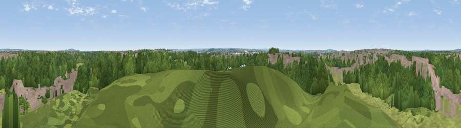

Viewpoint near Aveley
#32216 in England · top 37% of its area beats it · near AveleyWhere it is
The exact computed spot (TQ 58075 79825). Click the marker for map links.
The view, rendered

A 360° render of this exact spot computed from the terrain model, tree cover and land cover — summer colours, afternoon light, calibrated against photographs of famous viewpoints. Real trees, hedges and buildings will differ in detail.
The panorama
Grey silhouette: terrain skyline in each direction (720 bearings, Earth curvature and refraction included). Dashed green: skyline with trees (+15 m) and buildings (+8 m) as obstacles. Blue strip: how far the ground is visible on each bearing.
Where the view opens
Wedge length = distance to the farthest visible ground on that bearing (vegetation-aware). Rings at 10, 25 and 50 km.
What fills the view
46% woodland · 27% grassland · 14% built-up · 12% water ·
Angular shares of the visible panorama (visual magnitude), not map area. Landscape diversity 0.56 (0–1 Shannon).
Key numbers
More beautiful places nearby
The staircase of upgrades: each row has a higher view potential than everything closer. Driving times are estimates from straight-line distance, calibrated against real road routing — check an actual route before setting out.
| Place | Direction | Drive | Score |
|---|---|---|---|
| Sandy Lane Pit | WNW · 3 km | ~6 min | 51.1 |
| Viewpoint near Erith | W · 6 km | ~13 min | 54.3 |
| Viewpoint near Ebbsfleet Valley | SSE · 7 km | ~15 min | 56.1 |
| Viewpoint near Horndon On The Hill | ENE · 11 km | ~21 min | 58.8 |
| Viewpoint near Birling | SSE · 19 km | ~33 min | 65.2 |
| Viewpoint near Wrotham | S · 20 km | ~34 min | 66.6 |
| Viewpoint near Shipbourne | S · 27 km | ~43 min | 69.1 |
| Box Hill | SW · 47 km | ~68 min | 70.4 |
51.49527, 0.27576 · source: screening · position refined by local search. Computed location — check access rights before visiting.